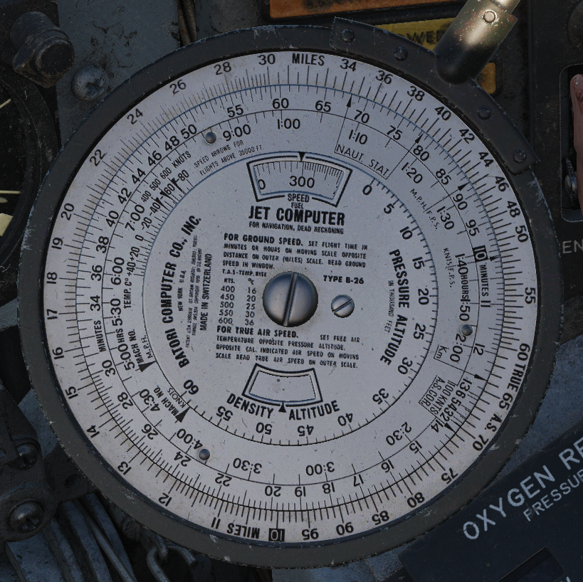
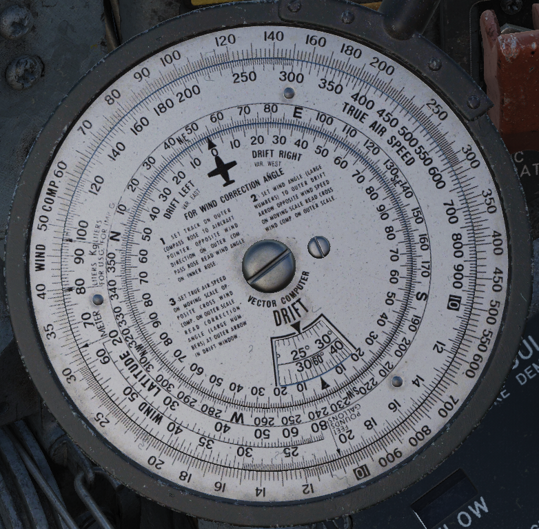
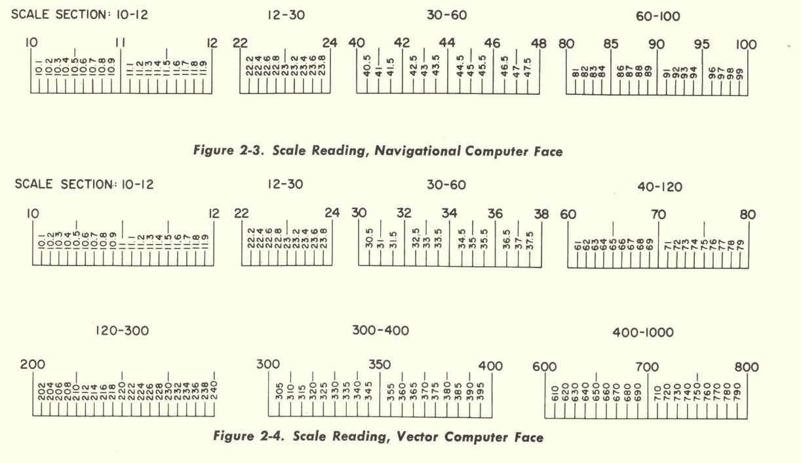
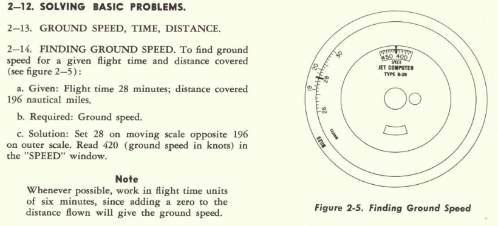
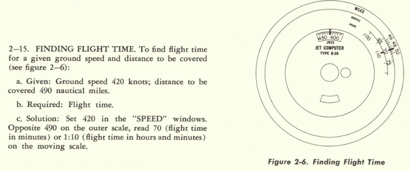
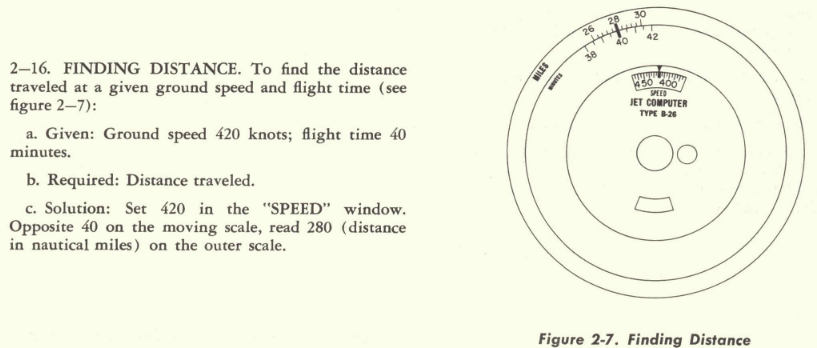
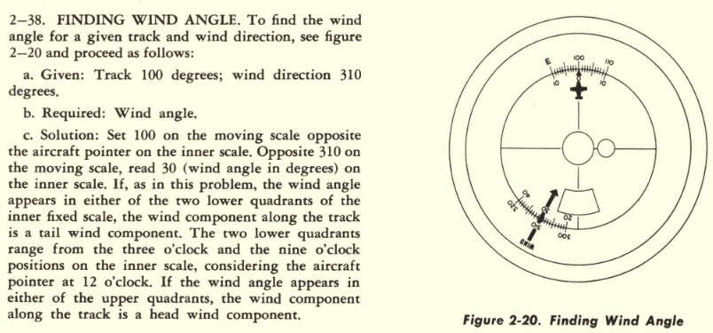
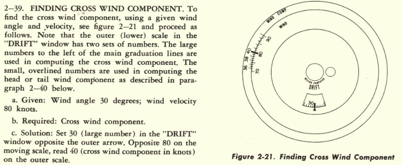
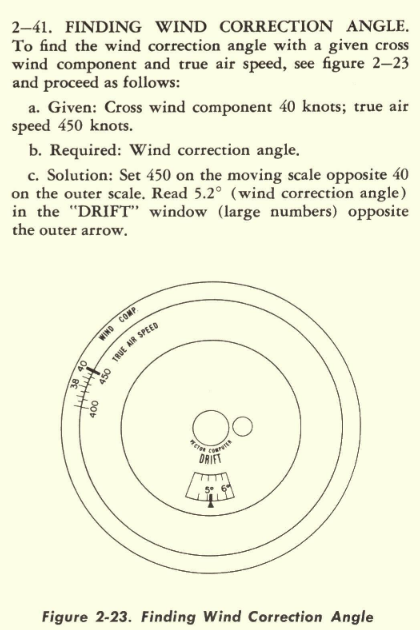

B-26 Navigation Computer
Description
The jet computer is essentially a circular slide rule adapted to aid computations in navigation. It solves most dead reckoning navigation problems such as speed, time, distance, fuel consumption, wind problems, conversions, and any numerical and trigonometric computation. The jet computer is operative on both faces with one movable scale on each face.
Some brief examples for solving basic problems are given and not every use case will be covered.
Navigational Computer Face Scales and Markings

- The outer scale is marked MILES and represents the distance in statute miles, nautical miles, and kilometers. This scale is also marked TRUE A.S. and can be used to represent true air speed.
- The moving scale is marked MINUTES where it is adjacent to the outer scale, and HRS just inside of the minutes graduations.
- A short scale marked 100 KNOTS A.S. COR. appears between 13 and 14. This scale represents air speed correction.
- An arrow marked FPS representing feet per second for miles per hour appears between 85–90. Arrows marked NAUT. STAT. and Km are located at intervals on the minute scale and are used to convert nautical miles, statute miles, and kilometers.
- The upper window, marked SPEED and FUEL, represents speed in knots or miles per hour, and fuel consumption in gallons or liters per hour.
- The lower window, marked DENSITY ALTITUDE, represents the density altitude in thousands of feet.
- The inner fixed scale is marked PRESSURE ALTITUDE and represents pressure altitude in thou sands of feet.
- The adjacent moving scale is marked TEMP. C for temperature in ° Centigrade.
- Two arrows marked MACH NO. KNOTS and MACH NO. M.P.H. appear on the adjacent moving scale to the left of the TEMP. C graduations. These arrows are used in finding Mach Number against indicated air speed.
Vector Computer Face Scales and Markings

Essentially, the vector computer face is the same as the navigational computer face in that it consists of an outer scale, an inner scale, and an intermediate moving scale. However, the vector face contains only one window.
If 10 on the moving scale is set opposite 10 on the outer scale, the aircraft pointer on the inner scale points to N on the moving scale. The various scales are identified as follows: - The outer scale is marked WIND COMP. and represents the wind component velocities. - The moving scale marked WIND is identical to the outer scale and represents the wind velocity. This scale is also marked TRUE AIR SPEED representing the true air speed in various wind problems. - Arrows marked FEET, POUNDS, GALLONS, METER, LITERS FOR U.S.G. and LITERS FOR IMP. G. are located at intervals on the wind scale and are used for many of the conversion problems. - The Short scale marked LATITUDE represents latitude in degrees and is used in pressure pattern navigation. - The DRIFT window exposes three separate scales all calibrated in degrees. These scales are used in wind problems and in the trigonometric calculations. The inner scale which has an aircraft pointer in the 12 o’clock position, is divided into four quadrants of 90° each. The adjacent moving scale is a compass rose graduated from 0–360°. These two scales are used to find wind angle and to apply wind correction angle for heading or drift for track. When set to given conditions, they show a graphical representation of aircraft and wind relation, whether there is a head or tail wind, wind from left or right.
Scale Reading
With the exception of the two innermost scales on the vector face, all scales on both faces of the computer are logarithmic:
- The main graduation lines are numbered, with the numbers representing the various measuring units described in the scale and marking sections above.
- The subgraduations, which are not numbered, can be read by mental estimation in the same manner as any scale with equidistant graduations, such as an ordinary ruler, calibrated in inches.
- A characteristic of logarithmic scales is that the graduations are not equidistant. Instead, they get closer together the higher the number.
- Another characteristic of logarithmic scales is that any number or graduation line representing a number, represents that number and all its multiples by 10. For example, 30 can also represent 0.3, 3.0, 300, 3,000, and so on. On the navigational computer face, the outer scale and the adjacent moving scale are identical and are graduated from 10 to 100. The subgraduations represent fractions of the main graduations and vary according to the section of the scale. On the vector computer face, the outer scale and the adjacent moving scale are identical and are graduated from 10 to 1,000.

Solving Basic Problems
Solving Ground Speed

Solving Flight Time

Solving Distanced Traveled

Solving Wind Angle

Solving Cross Wind Component

Solving Wind Correction Angle
